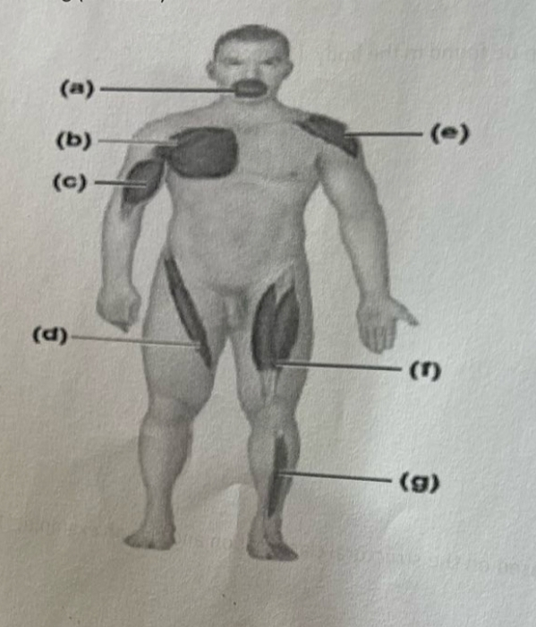
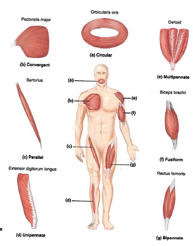
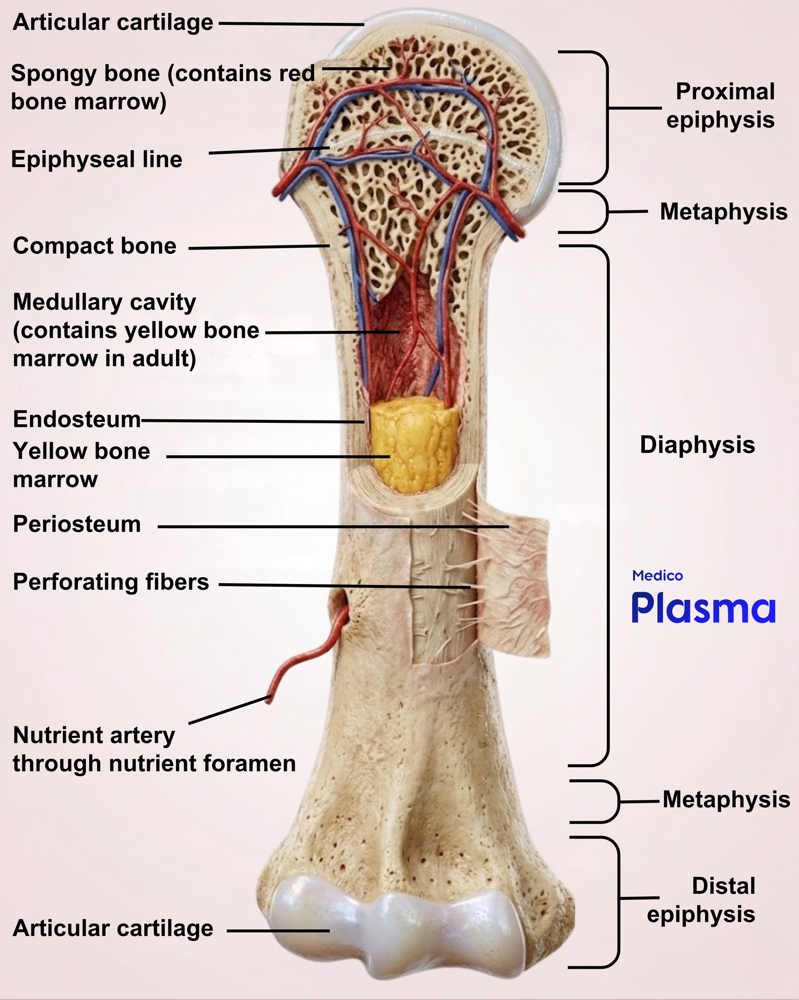
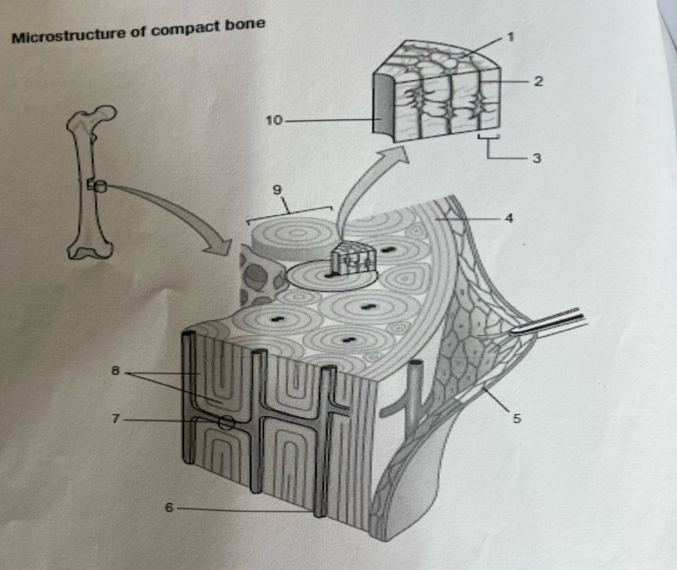
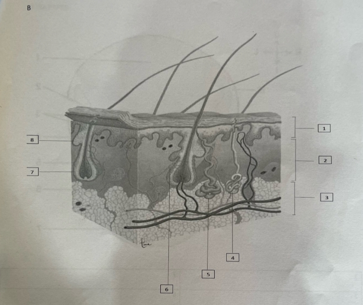
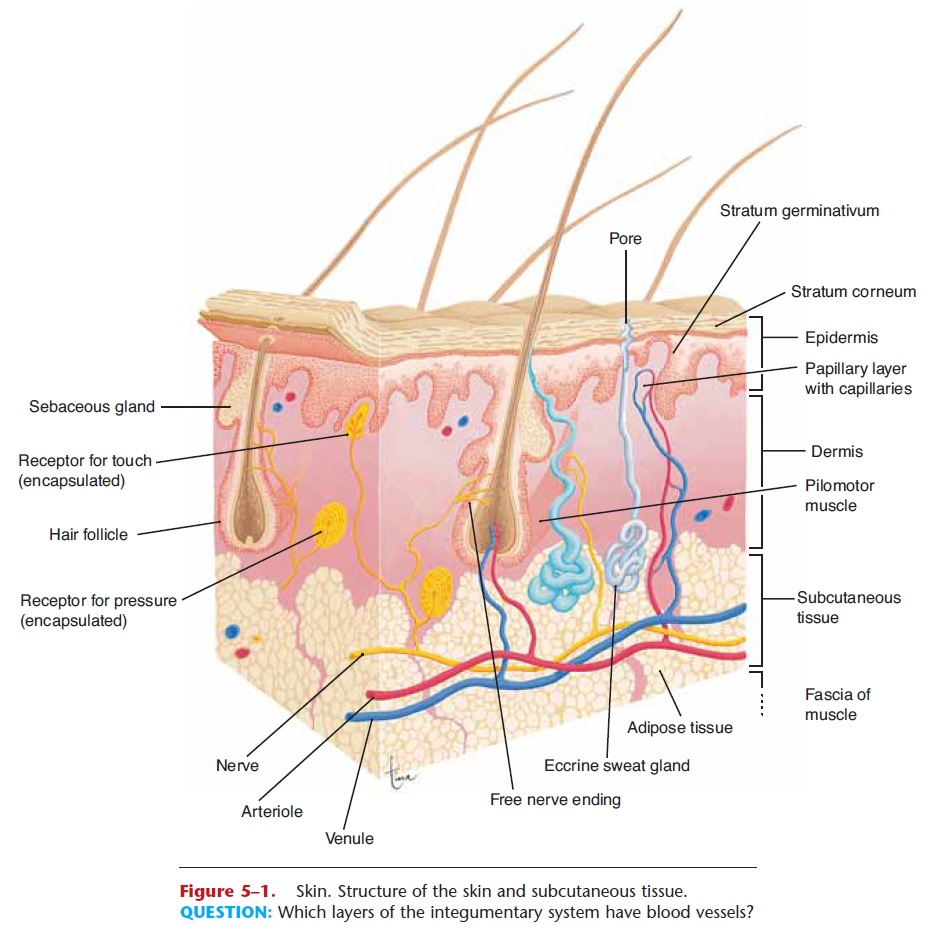
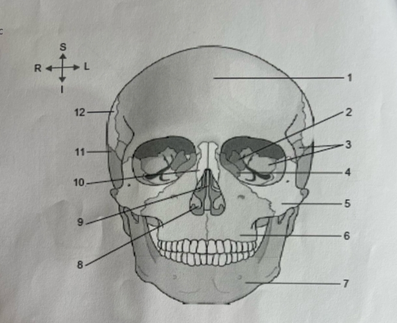
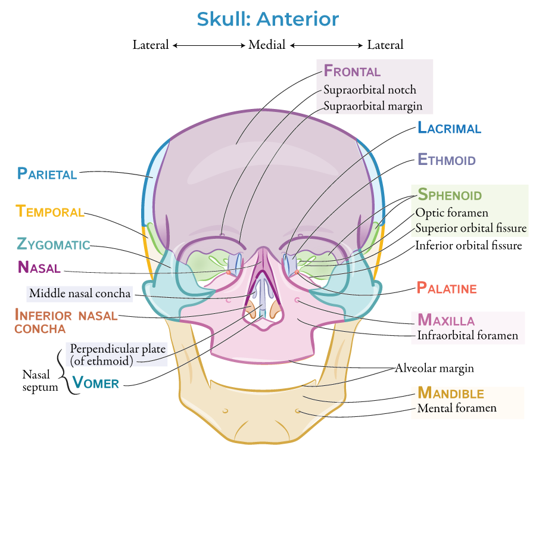

Short Answer & Diagram Labeling
Anatomy 2026
Answer the following scenario and diagram-based questions. Click Show Answer to reveal model answers.
Question 1 – Bone Classification
Classify bones found in the skeleton on the basis of shapes and give two examples (10 marks).
Answer
Bones are classified by shape into: (1) Long bones (e.g., femur, humerus) – longer than wide, with a shaft and two ends; (2) Short bones (e.g., carpal bones, tarsal bones) – roughly cube-shaped; (3) Flat bones (e.g., sternum, ribs, scapula) – thin, flattened, often curved; (4) Irregular bones (e.g., vertebrae, mandible) – complex shapes that do not fit other categories; (5) Sesamoid bones (e.g., patella) – small, round bones embedded in tendons. Two examples for each category: Long – femur, humerus; Short – scaphoid, calcaneus; Flat – frontal bone, sternum; Irregular – sphenoid, vertebra; Sesamoid – patella, pisiform.
Question 2 – Skin Receptors
Discuss all the receptors found in the skin and their functions (8 marks).
Answer
Skin receptors include: (1) Merkel cells (tactile discs) – slowly adapting mechanoreceptors for sustained touch and texture; (2) Meissner's corpuscles – rapidly adapting mechanoreceptors for light touch and vibration; (3) Pacinian corpuscles – rapidly adapting mechanoreceptors for deep pressure and high-frequency vibration; (4) Ruffini endings – slowly adapting mechanoreceptors for stretch and warmth; (5) Free nerve endings – nociceptors (pain) and thermoreceptors (hot/cold); (6) Hair follicle receptors – detect hair displacement and light touch. Each receptor type is specialized for a specific modality and adapts at different rates to provide comprehensive sensory input from the environment.
Question 3 – Epidermis Layers
Briefly describe the layers of the epidermis (10 marks)
Answer
The epidermis has five layers (from deep to superficial): (1) Stratum basale (germinativum) – single layer of mitotically active cells resting on the basement membrane; contains melanocytes and Merkel cells; (2) Stratum spinosum – several layers of polyhedral cells with desmosomes, providing strength and flexibility; (3) Stratum granulosum – 3–5 layers of flattened cells containing keratohyalin granules and lamellar bodies, marking the transition to keratinization; (4) Stratum lucidum – a clear, thin layer of dead, flattened cells, present only in thick skin (palms and soles); (5) Stratum corneum – outermost layer of many layers of dead, keratinized cells that are continuously shed; provides a protective barrier against water loss, abrasion, and pathogens.
Question 4 – Apocrine Glands
Discuss the apocrine gland and places it can be found in the body. (10 marks)
Answer
Apocrine glands are large, coiled tubular glands that develop from the hair follicle. They become active at puberty and are controlled by hormones. Their secretory portion lies in the dermis or subcutaneous tissue, and their ducts open into the hair follicle. The secretion is a viscous, milky, or oily fluid that is initially odorless; bacterial decomposition produces body odor. They are found mainly in the axillae (armpits), areolae of the breasts, perineal region (pubic area), and external auditory canal (ceruminous glands). They are also present in the eyelids (Moll's glands).
Question 5 – Joint Classification
Outline the different types of joints based on the structural classification and give an example. (10 marks)
Answer
Structural classification of joints is based on the type of connective tissue binding the bones: (1) Fibrous joints – bones joined by dense fibrous connective tissue; no joint cavity; mostly immovable (synarthroses); examples: sutures of the skull, gomphosis (tooth in socket), syndesmosis (distal tibiofibular joint). (2) Cartilaginous joints – bones united by cartilage; no joint cavity; slightly movable (amphiarthroses); examples: symphysis pubis, intervertebral discs, epiphyseal plates. (3) Synovial joints – bones separated by a joint cavity filled with synovial fluid; freely movable (diarthroses); examples: knee, shoulder, hip, elbow. Synovial joints are further subclassified by shape into plane, hinge, pivot, condyloid, saddle, and ball-and-socket.
Question 6 – Muscle Fascicle Orientation
Muscles can be classified according to fascicle orientation, identify the type and name of the muscle from a-g (14 marks).

Answer

Question 7 – Long Bone Diagram
Draw and label the following parts of a long bone (diaphysis, epiphysis, metaphysis, epiphyseal plate, articular cartilage, periosteum, medullary /marrow cavity, endosteum) (8 marks)
Answer

SECTION B – Label diagrams below A-C
Label the diagrams below (A – Microstructure of compact bone; B – Skin structure; C – Skull anterior view).
A. Microstructure of compact bone


B. Skin structure


C. Skull anterior view

